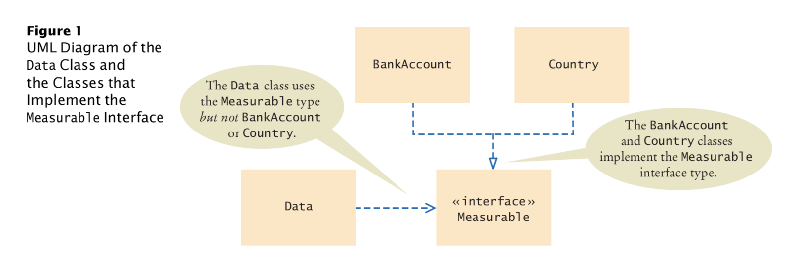

3. Interface
An interface type is similar to a class, but there are several important differences:
An interface type doesn't have instance variables
Methods in an interface must be abstract(that is, without an implementation)
All methods in an interface type are automatically public
An interface type has no constructor. Interface are not classes, and you cannot construct objects of an interface type.
Implementing an Interface Type:
public class BankAccount implements Measurable
{
...
public double getMeasure()
{
return balance;
}
}
- Once the BankAccount class implements the Measurable interface type, BankAccount objects are instances of the Measurable type:
Measurable obj = new BankAccount(); //OK

further on, the source code in bigjava section_1
A class can implement more than one interface, for example
public class Country implements Measurable, Named
public interface Named {
String getName();
}
Constants in Interfaces
- Interfaces cannot have instance variables, but it is legal to specify constants. When declaring a constant in an interface, you can (and should) omit the reserved words public static final, because all variables in an interface are automatically public static final. For example,
public interface Named{
String NO_NAME = "...";
...
}
Static Methods in Interfaces
- Before Java 8, all methods in an interface had to be abstract. Java 8 allows static methods in interfaces that work exactly like static methods in classes. A static method of an interface does not operate on objects, and its purpose should relate to the interface that contains it.
public interface Measurable
{
double getMeasure(); // An abstract method
static double average(Measurable[] objects) // A static method
{
double sum = 0;
for (Measurable obj : objects)
{
sum = sum + obj.getMeasure();
}
if (objects.length > 0) { return sum / objects.length; }
else { return 0; }
}
}
/*
To call this method, provide the name of of the interface and the method name:
*/
double meanArea = Measurable.average(countries);
default metonds
A default method is a non-static method in an interface that has an implementation.
A class that implements the method either inherits the default behavior or overrides it.
By providing default methods in an interface, it is less work to define a class that implements an interface.
For example, the Measurable interface can declare getMeasure as a default method:
public interface Measurable {
default double getMeasure() { return 0; }
}
Converting from Classes to Interfaces
- It is legal to convert from the BankAccount type to the Measurable type. In general, you can convert from a class type to the type of any interface that the class implements. For example,
BankAccount account = new BankAccount(1000);
Measurable meas = account; // OK
Casting from Interfaces to Classes
- Consider this method that returns the object with the larger measure:
public static Measurable larger(Measurable obj1, Measurable obj2) {
if (obj1.getMeasure() > obj2.getMeasure()) {
return obj1;
}else{
return obj2;
}
}
/*
The larger method returns the object with the larger measure, as a Measurable reference. It has no choice––it does not know the exact type of the object. Let’s use the method:
*/
Country uruguay = new Country("Uruguay", 176220);
Country thailand = new Country("Thailand", 513120);
Measurable max = larger(uruguay, thailand);
/*
Now what can you do with the max reference?
You know it refers to a Country object, but the compiler doesn’t.
For example, you cannot call the getName method:
*/
String countryName = max.getName(); // Error
/*
That call is an error, because the Measurable type has no getName method.
However, as long as you are absolutely sure that max refers to a Country object,
you can use the cast notation to convert its type back:
*/
Country maxCountry = (Country) max;
String name = maxCountry.getName();